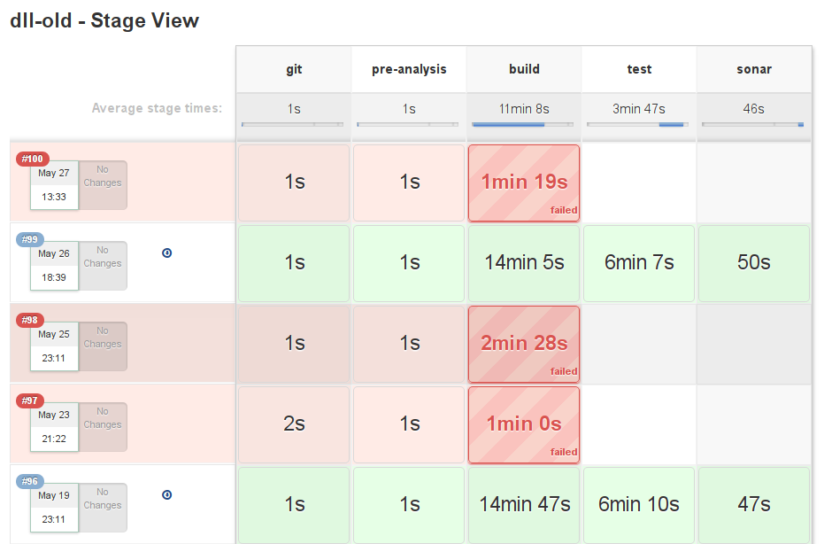
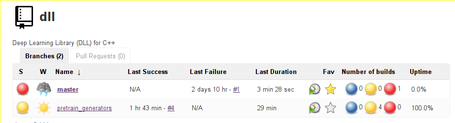
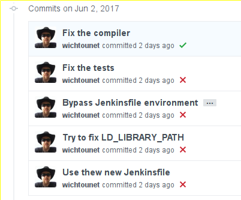
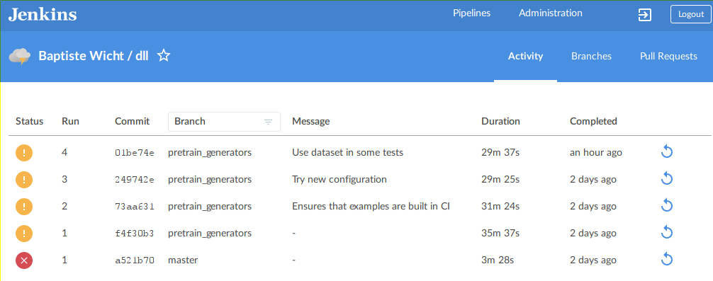
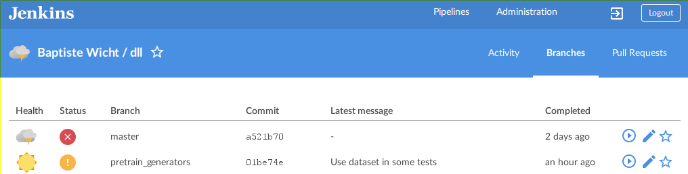
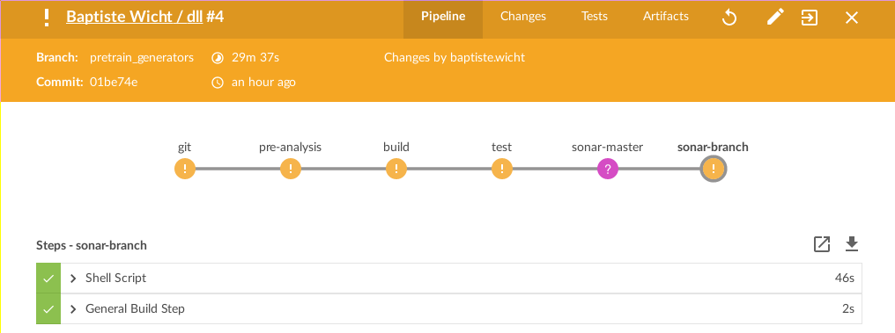
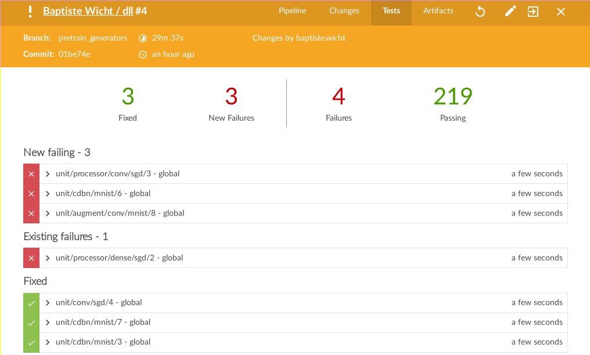

Jenkins Declarative Pipeline and Awesome Github Integration
This post is about some news about Jenkins and how I've updated my Jenkins usage. This may be a bit of an enthusiastic post ;)
At the beginning of Jenkins, the best way to define the commands to be executed for your builds was simply to write the commands in the Jenkins interface. This worked quite well. Later on, Jenkins introduced the notion of Pipeline. Instead of a single set of commands to be executed, the build was defined in multi-stages pipeline of commands. This is defined as a Groovy script. One big advantage of this is that all the code for creating the build is inside the repository. This has the advantage that each build is reproducible. This enabled to define complex pipelines of commands for your builds. Moreover, this also allows to have a clean view of which steps are failing and which steps are taking how much of the time of the build. For instance, here it's a view of the pipeline steps for my DLL project:
I think that's pretty cool :)
They recently added a new feature, the declarative pipelines. Instead of scripting the Pipeline in Groovy, the new system uses its own syntax, completely declarative, to put blocks together and add ways of doing actions at specific points and setting environment and so on. I think the new syntax is much nicer than the Groovy scripted Pipeline way, so I started converting my scripts. I'll give an example in a few paragraphs. But first, I'd like to talk about Github integration. Before, every time I created a new project, I add to add it to Jenkins by creating a new project, updating the link to the Github project and a few things in order to add it. This is not so bad but what if you want to build on several branches and keep track of the status of the branches and maybe of the Pull Requests as well. All of this is now very simple. You can now declare the Github organizations (and users) you are of building projects from and the projects inside the organization will be automatically detected as long as they have a Jenkinsfile inside. That means that you'll never have to create a project yourself or handle branches. Indeed, all the created projects can now handle multiples. For instance, here is the status of the two current branches of my dll project:
It's maybe not the best example since one branch is failing and the other is unstable, but you can see that you can track the builds for each branch in a nice way.
A very good feature of this integration is that Jenkins will now automatically marks commits on your Github with the status of your builds at no cost! For instance, here is the status on my ETL project after I configured on Jenkins and made the first builds:
Pretty cool I think :)
Another nice thing in Jenkins is the Blue Ocean interface. This is an alternative interface, especially well-suited for multi-branch projects and pipelines. It looks much more modern and I think it's quite good. Here are a few views of it:
The Activity view for the last events of the project:
The Branches view for the status of each branch:
The view of the status of a build:
The status of the tests for a given build:
It's likely that it won't appeal to everyone, but I think it's pretty nice.
If we get back to the declarative Pipeline, here is the declarative pipeline for my Expression Templates Library (ETL) project:
pipeline { agent any environment { CXX = "g++-4.9.4" LD = "g++-4.9.4" ETL_MKL = 'true' } stages { stage ('git'){ steps { checkout([ $class: 'GitSCM', branches: scm.branches, doGenerateSubmoduleConfigurations: false, extensions: scm.extensions + [[$class: 'SubmoduleOption', disableSubmodules: false, recursiveSubmodules: true, reference: '', trackingSubmodules: false]], submoduleCfg: [], userRemoteConfigs: scm.userRemoteConfigs]) } } stage ('pre-analysis') { steps { sh 'cppcheck --xml-version=2 -j3 --enable=all --std=c++11 `git ls-files "*.hpp" "*.cpp"` 2> cppcheck_report.xml' sh 'sloccount --duplicates --wide --details include/etl test workbench > sloccount.sc' sh 'cccc include/etl/*.hpp test/*.cpp workbench/*.cpp || true' } } stage ('build'){ steps { sh 'make clean' sh 'make -j6 release' } } stage ('test'){ steps { sh 'ETL_THREADS=-j6 ETL_GPP=g++-4.9.4 LD_LIBRARY_PATH=\"${LD_LIBRARY_PATH}:/opt/intel/mkl/lib/intel64:/opt/intel/lib/intel64\" ./scripts/test_runner.sh' archive 'catch_report.xml' junit 'catch_report.xml' } } stage ('sonar-master'){ when { branch 'master' } steps { sh "/opt/sonar-runner/bin/sonar-runner" } } stage ('sonar-branch'){ when { not { branch 'master' } } steps { sh "/opt/sonar-runner/bin/sonar-runner -Dsonar.branch=${env.BRANCH_NAME}" } } stage ('bench'){ steps { build job: 'etl - benchmark', wait: false } } } post { always { step([$class: 'Mailer', notifyEveryUnstableBuild: true, recipients: "[email protected]", sendToIndividuals: true]) } } }
There is nothing really fancy about, it's probably average. Moreover, since I'm not an expert on pipelines and I've just discovered declarative pipelines, it may not be optimal, but it works. As you'll see there are some problems I haven't been able to fix.
The first part declares the environment variables for the build. Then, the multiple build stages are listed. The first stage checkout the code from the SCM. This ugly piece of code is here to allow to checkout the submodules. It is the only solution I have found so far. It's very ugly but it works. The second steps is simply some basic static analysis. The next step is the classical build step. Then, the tests are run. In that case, I'm using a script because the tests are compiled with several different sets of options and it was much easier to put that in a script that in the Pipeline. Moreover, that also means I can run them standalone. The variables in the line to run the script is another problem I haven't been able to fix so far. If I declare these variables in an environment block, they are not passed to the script for some reason, so I had to use this ugly line. The next two blocks are for Sonar analysis. If you start with Sonar, you can simply the second block that passed the branch information to Sonar. Unfortunately, Sonar is very limited in terms of Git branches. Each branch is considered as another totally different project. That means the false positives defined in the master branch will not be used in the second branch. Therefore, I kept a clean master and several different projects for the other branches. Once Sonar improves this branch handling stuff, if they ever do, I'll be able to get rid of one of these conditional stages. The last stage is simple running the benchmark job. Finally, the post block is using the Mailer plugin to send failed builds information. Again, there is a problem here since this does not send "Back to normal" information as it used to do before. I've asked this question on StackOverflow, but haven't received an answer so far. I'll post a better solution on this blog once I have one. If any of you have some solutions to these problems, don't hesitate to post in the comments below or to contact me on Github.
Here it is. I really think Jenkins is getting even greater now with all this cool stuff and I advice you to try it out!
Comments
Comments powered by Disqus